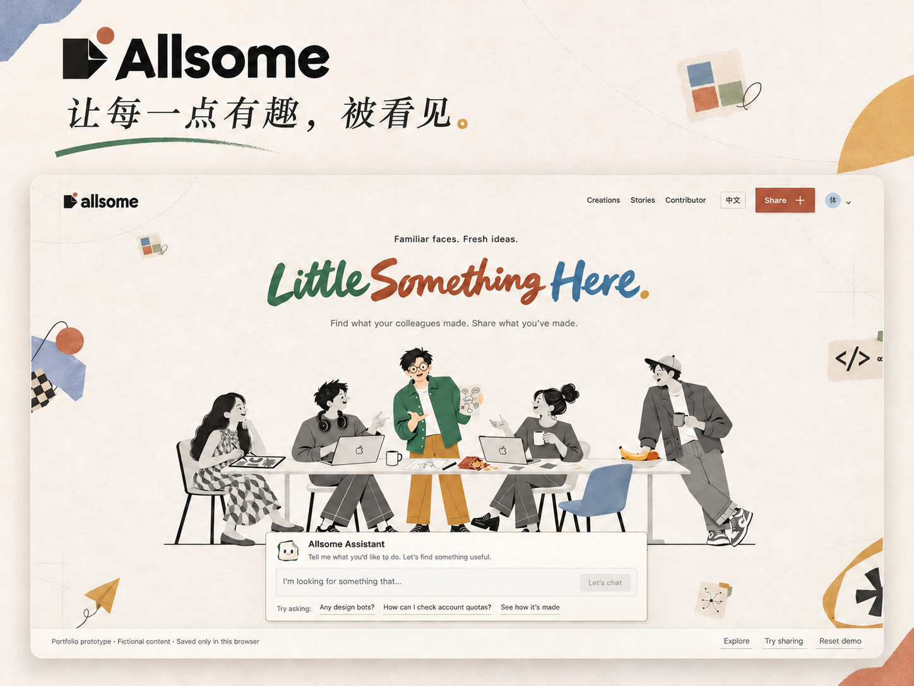
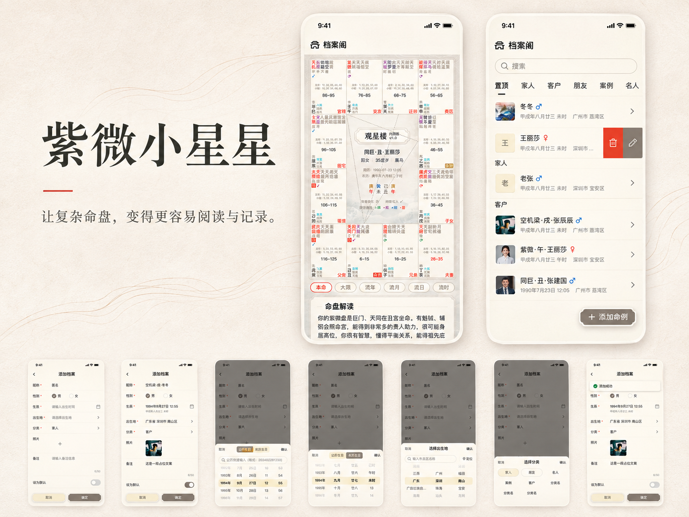
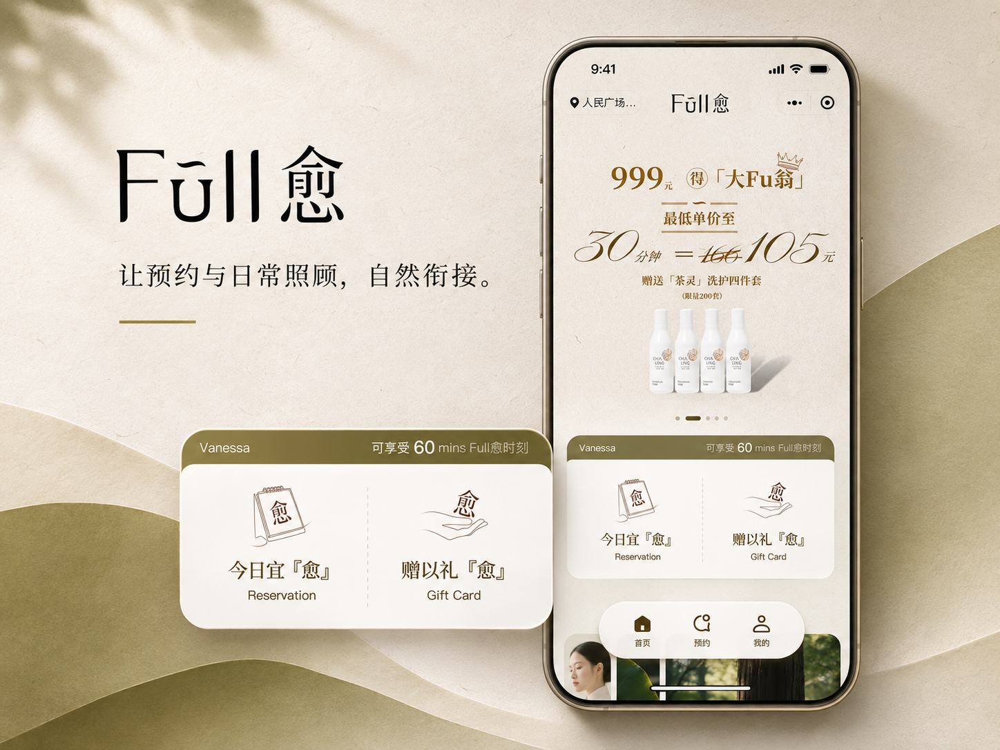
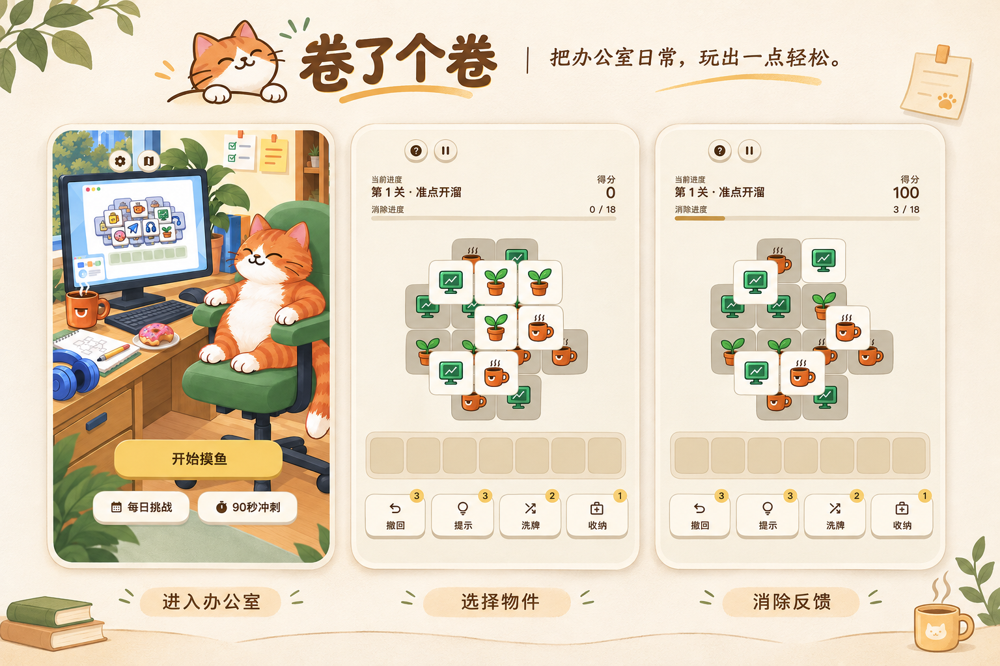
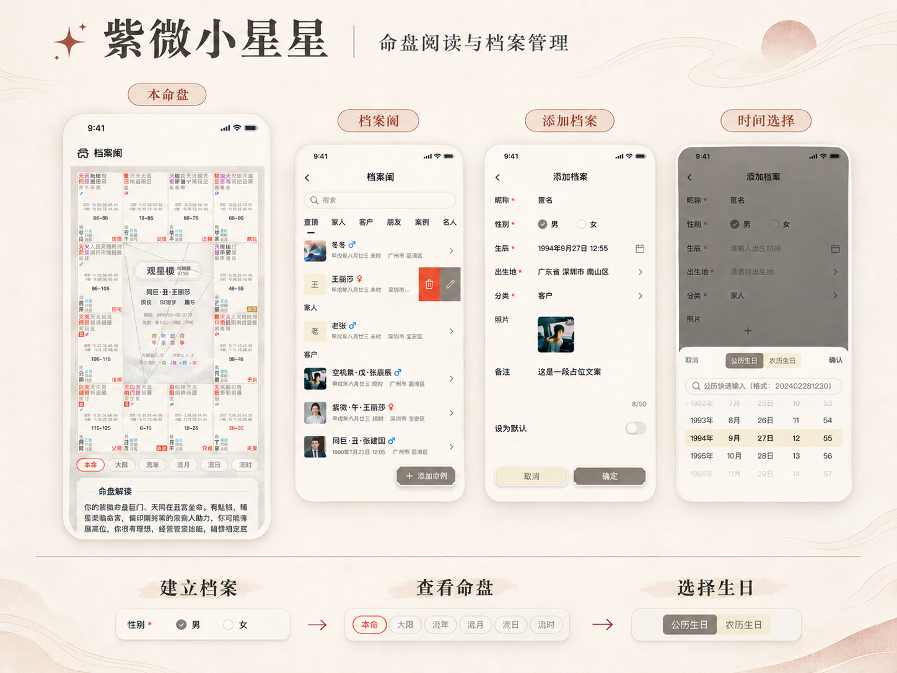
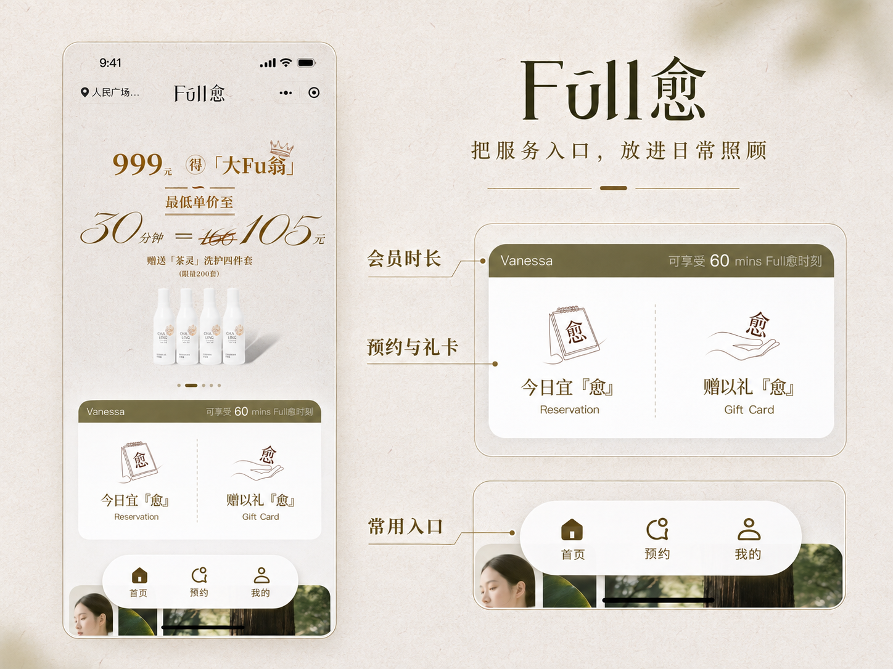

INDEPENDENT BUILDS / ONGOING EXPLORATIONS
不限定题材、领域或形式。从一点好奇出发，试着做成产品、互动体验，或其他有意思的东西。这里会持续增加新的尝试。
走进山野，让自然成为一段可探索的体验。
将国家公园的自然影像、观察内容与第一人称漫游串成一次线上探索，当前围绕海南热带雨林持续完善。
在诗里，走一程山水。
让诗文、画面、朗读与声音共同组织一段有节奏的阅读。

让每一点有趣，被看见。
让同事的工具、创作与经验被发现，也让分享变得更容易。
把办公室日常，玩出一点轻松。
把办公室日常变成消除游戏，探索遮挡关系、选牌与消除反馈如何组织轻量的游戏节奏。

让星盘成为清晰的分析工作台。
把本命、大运、流年与命例管理组织成专业使用者的分析工作台。

让一次预约，连起完整的服务。
围绕预约、订单与门店服务，连接用户端体验和后台管理。


